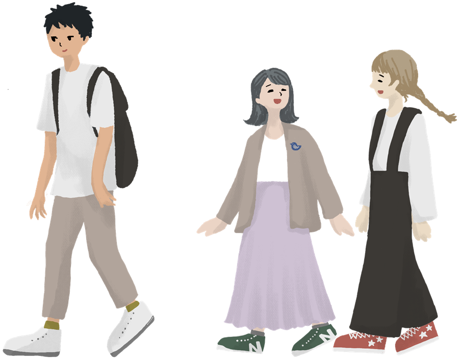

{{ fc.type }}

興味のある分野から学部を探してみましょう。各学部で学べる内容と主な特徴を紹介しています。
※掲載している学部・特徴はサンプルです。
大学の種類を知ろう
◆ Types of Universities

学部選びの3つのポイント
◆ {{ p.no }}
{{ p.title }}
{{ p.text }}

興味のある分野から学部を探してみましょう。各学部で学べる内容と主な特徴を紹介しています。
※掲載している学部・特徴はサンプルです。
{{ p.text }}